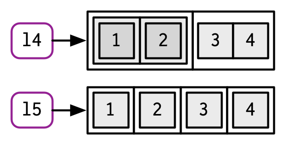
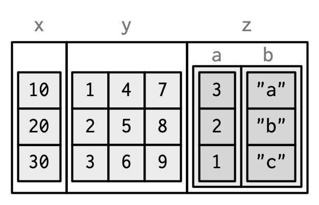

graph TD
A[Atomic] --> B(Vector)
C[List] --> B(Vector)
D(NULL)
3 Vectors
Introduction
R 中的Vectors可以分为两种：要求所有元素相同的atomic、元素可以是任意类型的list，还有一个类似零长度向量的NULL。下面是三者关系的示意图。
这里提到的vector就是我们常说的向量。在R中，所有的对象都是向量，对向量添加不同属性就构成了不同类型的数据。维度（dimension）和类（clas）是两个比较重要的属性，前者将一维向量升格为二维矩阵甚至多维数组，后者赋予了对象S3面向对象系统。
Outline
- 3.2节：R中最简单的 atomic 向量：
integer、double、character、logical。 - 3.3节：向量的三个重要属性：
name、dimension、class。 - 3.4节：具有特殊属性的 atomic 向量：
factor、date、date-time、duration。 - 3.5节：list。
- 3.6节：data.frame 和 tibble。
Atomic vectors
R 中有四类常见的atomic向量：integer、double、character、logical。下面是这四类向量之间的关系图。还有两类不常见的：complex和raw，前者表示复数，后者表示二级制数据。
graph BT
B[Atomic] --> A(Vector)
D[Logical] --> B(Atomic)
C[Numeric] --> B(Atomic)
E[Integer] --> C(Numeric)
F[Double] --> C(Numeric)
G[Character] --> B(Atomic)
subgraph " "
D
E
F
G
end
Scalars
上述四种atomic向量都有各自的语法：
logical：只能使用TRUE/T和FALSE/F。double：有三种形式：十进制、科学技术法和十六进制；还有三个特殊的符号：NaN、Inf和-Inf。integer：形式同double，但是必须添加L后缀。character：使用双引号或单引号包裹，\进行转义。
Making longer vectors with c()
使用c()函数可以创建长向量，使用typeof()查看对象的类型。
lgl_var <- c(TRUE, FALSE)
int_var <- c(1L, 6L, 10L)
dbl_var <- c(1, 2.5, 4.5)
chr_var <- c("these are", "some strings")
typeof(lgl_var)
#> [1] "logical"
typeof(int_var)
#> [1] "integer"
typeof(dbl_var)
#> [1] "double"
typeof(chr_var)
#> [1] "character"Missing values
NA是not applicable的缩写，表示缺失值。缺失值有一定的‘传染性’：许多包含NA的计算会返回NA。
NA > 5
#> [1] NA
10 * NA
#> [1] NA
!NA
#> [1] NA但有一些特例：
NA^0
#> [1] 1
NA | TRUE
#> [1] TRUE
NA & FALSE
#> [1] FALSE使用is.na()判断是否是NA，而不是==。
x <- c(NA, 5, NA, 10)
x == NA
#> [1] NA NA NA NA
is.na(x)
#> [1] TRUE FALSE TRUE FALSE理论上讲：存在四种NA类型，分别对应上述的四种atomic向量：NA(logical)、NA_integer_(integer)、NA_real_(double)、NA_character(character)。但平常使用无需强调，R会自动强制转换。NA默认表示logical是因为下面的强制转换顺序。
Coercion
如上所述，当atomic向量中的元素类型不一致时，R会自动强制转换类型。转换的顺序次序为：character → double → integer → logical。例如，c("a", 1)的结果是c("a", "1")。
c("a", 1)
#> [1] "a" "1"强制转换的背后是as.*()函数，例如as.logical()、as.integer()、as.double()、as.character()。转换失败会生成警告信息和缺失值。
as.integer(c("1", "1.5", "a"))
#> Warning: NAs introduced by coercion
#> [1] 1 1 NATesting
R 中由类似判断是否是缺失值is.na()的其他函数，但是要小心使用。is.logical()、is.integer()、is.double()、is.character()这四个函数的用法与is.na()相同；is.vector()、is.atomic()、is.numeric()的用法则大不相同。
is.vector()：根据mode参数，判断是否属于atomic向量、list、或expression，同时不能有除name外的其他属性。is.atomic()：判断是否属于atomic向量，NULL返回FALSE。is.numeric()：属于double、integer或任何可视为数值的向量。
具体细节可以查看R文档。
Exercises
…
Attributes
Getting and setting
属性可以看作是由键值对构成，附属于对象的元信息。可以使用attr(),attributes(),structure()来提取或设置对象的属性。
# 单独设置
a <- 1:3
attr(a, "x") <- "abcdef"
attr(a, "x")
#> [1] "abcdef"
attr(a, "y") <- 4:6
str(attributes(a))
#> List of 2
#> $ x: chr "abcdef"
#> $ y: int [1:3] 4 5 6
# 批量设置
a <- structure(
1:3,
x = "abcdef",
y = 4:6
)
str(attributes(a))
#> List of 2
#> $ x: chr "abcdef"
#> $ y: int [1:3] 4 5 6
属性极易丢失，但有两个例外，通常会保留：name,dim；保留属性需要使用S3面向对象系统。
attributes(a[1])
#> NULL
attributes(sum(a))
#> NULLNames
有三种为向量设定name属性的方法。去除name属性有两种方法.
# When creating it:
x <- c(a = 1, b = 2, c = 3)
x
#> a b c
#> 1 2 3
x <- unname(x)
x
#> [1] 1 2 3
# By assigning a character vector to names()
x <- 1:3
names(x) <- c("a", "b", "c")
x
#> a b c
#> 1 2 3
names(x) <- NULL
x
#> [1] 1 2 3
# Inline, with setNames():
x <- setNames(1:3, c("a", "b", "c"))
x
#> a b c
#> 1 2 3在创建name属性时，应当保持name唯一且不为缺失值。需要注意这不是R的强制要求。
Dimensions
atomic向量添加dim属性，就可以生成二维matrix或多维array。在R中可以使用matrix(),array()或dim()来生成。
# Two scalar arguments specify row and column sizes
x <- matrix(1:6, nrow = 2, ncol = 3)
x
#> [,1] [,2] [,3]
#> [1,] 1 3 5
#> [2,] 2 4 6
# One vector argument to describe all dimensions
y <- array(1:12, c(2, 3, 2))
y
#> , , 1
#>
#> [,1] [,2] [,3]
#> [1,] 1 3 5
#> [2,] 2 4 6
#>
#> , , 2
#>
#> [,1] [,2] [,3]
#> [1,] 7 9 11
#> [2,] 8 10 12
# You can also modify an object in place by setting dim()
z <- 1:6
dim(z) <- c(3, 2)
z
#> [,1] [,2]
#> [1,] 1 4
#> [2,] 2 5
#> [3,] 3 6atomic向量的许多函数都对matrix和array进行了推广。
| Vector | Matrix | Array |
|---|---|---|
names() |
rownames(),colnames() |
dimnames() |
length() |
nrow(),ncol() |
dim() |
c() |
rbind(),cbind() |
abind::abind() |
| - | t() |
aperm() |
is.null(dim(x)) |
is.matrix() |
is.array() |
不能简单地将没有维度的atomic向量视作只有1行或1列的矩阵、1维的数组，因为函数对它们的处理结果是不一样的。
str(1:3) # 1d vector
#> int [1:3] 1 2 3
str(matrix(1:3, ncol = 1)) # column vector
#> int [1:3, 1] 1 2 3
str(matrix(1:3, nrow = 1)) # row vector
#> int [1, 1:3] 1 2 3
str(array(1:3, 3)) # "array" vector
#> int [1:3(1d)] 1 2 3Exercises
- comment属性比较特殊，不会被
print打印出来，只能使用attr()或attributes()来提取。
S3 atomic vectors
class是另外一个重要的属性，它赋予了对象S3面向对象的能力。每个S3对象由base type构建（base type内容见12章）。本节主要讨论下面四种S3 atomic vectors：
factor：分类数据。Date：日期数据。POSIXct：日期时间数据。difftime：持续时间数据。
graph BT
B[Atomic] --> A(Vector)
D[Logical] --> B(Atomic)
C[Numeric] --> B(Atomic)
E[Integer] --> C(Numeric)
F[Double] --> C(Numeric)
G[Character] --> B(Atomic)
subgraph "base atomic"
D
E
F
G
end
H[factor] --> E
I[POSIXct] --> F
J[Date] --> F
subgraph "S3 atomic"
H
I
J
end
Factors
factor 是在integer类型向量基础上，添加class = fcator和levels两个属性构成。
x <- factor(c("a", "b", "b", "a"))
x
#> [1] a b b a
#> Levels: a b
typeof(x)
#> [1] "integer"
attributes(x)
#> $levels
#> [1] "a" "b"
#>
#> $class
#> [1] "factor"
factor 有一个变体——ordered factor，它的属性levels具有了顺次意义，例如：low,medium,high等。
grade <- ordered(c("b", "b", "a", "c"), levels = c("c", "b", "a"))
grade
#> [1] b b a c
#> Levels: c < b < abase R 中的函数如read.csv(),data.frame()会自动将字符串转换为factor，这种行为很没有道理，因为有时数据中不可能包含全部的level。可以通过stringsAsFactors = FALSE来禁用这种行为。
Dates
Date 是在double类型向量基础上，添加class = Date属性构成。去除属性后，可以看到原来的double向量。
today <- Sys.Date()
typeof(today)
#> [1] "double"
attributes(today)
#> $class
#> [1] "Date"
# 底层double向量，思考一下这个数字的含义？
unclass(today)
#> [1] 20347Date-times
base R 提供了两种储存 date-time 的数据格式：POSIXct和POSIXlt。这里我们只关注POSIXct，因为它构建于double类型向上，且在数据框中广泛应用。POSIXct有两个属性：class = POSIXct和tzone。
now_ct <- as.POSIXct("2018-08-01 22:00", tz = "UTC")
now_ct
#> [1] "2018-08-01 22:00:00 UTC"
typeof(now_ct)
#> [1] "double"
attributes(now_ct)
#> $class
#> [1] "POSIXct" "POSIXt"
#>
#> $tzone
#> [1] "UTC"tzone属性值控制date-time的显示形式，不改变其本质的double数值。
new_ct <- structure(now_ct, tzone = "Asia/Tokyo")
new_ct
#> [1] "2018-08-02 07:00:00 JST"
unclass(now_ct)
#> [1] 1533160800
#> attr(,"tzone")
#> [1] "UTC"
unclass(new_ct)
#> [1] 1533160800
#> attr(,"tzone")
#> [1] "Asia/Tokyo"Durations
durations 表示date或date-time之间的持续时间，它是在double类型向量基础上，添加class = difftime属性构成，同时有属性units，表示持续时间的单位。
one_week_1 <- as.difftime(1, units = "weeks")
one_week_1
#> Time difference of 1 weeks
typeof(one_week_1)
#> [1] "double"
#> [1] "double"
attributes(one_week_1)
#> $class
#> [1] "difftime"
#>
#> $units
#> [1] "weeks"
one_week_2 <- as.difftime(7, units = "days")
one_week_2
#> Time difference of 7 days
typeof(one_week_2)
#> [1] "double"
attributes(one_week_2)
#> $class
#> [1] "difftime"
#>
#> $units
#> [1] "days"Exercises
- 仔细观察下面三个因子的不同。
# 数据和level同时反转
f1 <- factor(letters)
f1
#> [1] a b c d e f g h i j k l m n o p q r s t u v w x y z
#> Levels: a b c d e f g h i j k l m n o p q r s t u v w x y z
as.integer(f1)
#> [1] 1 2 3 4 5 6 7 8 9 10 11 12 13 14 15 16 17 18 19 20 21 22 23 24
#> [25] 25 26
levels(f1) <- rev(levels(f1))
f1
#> [1] z y x w v u t s r q p o n m l k j i h g f e d c b a
#> Levels: z y x w v u t s r q p o n m l k j i h g f e d c b a
as.integer(f1)
#> [1] 1 2 3 4 5 6 7 8 9 10 11 12 13 14 15 16 17 18 19 20 21 22 23 24
#> [25] 25 26
# 仅数据反转
f2 <- rev(factor(letters))
f2
#> [1] z y x w v u t s r q p o n m l k j i h g f e d c b a
#> Levels: a b c d e f g h i j k l m n o p q r s t u v w x y z
as.integer(f2)
#> [1] 26 25 24 23 22 21 20 19 18 17 16 15 14 13 12 11 10 9 8 7 6 5 4 3
#> [25] 2 1
# 仅level反转
f3 <- factor(letters, levels = rev(letters))
f3
#> [1] a b c d e f g h i j k l m n o p q r s t u v w x y z
#> Levels: z y x w v u t s r q p o n m l k j i h g f e d c b a
as.integer(f3)
#> [1] 26 25 24 23 22 21 20 19 18 17 16 15 14 13 12 11 10 9 8 7 6 5 4 3
#> [25] 2 1Lists
虽然看起来list中的元素是不同，诚如前章所述，list中的元素有其自己的内存地址，也就是说，list中的元素本质是相同的，只是其索引的内容类型不同。
Creating
使用函数list()创建list。
l1 <- list(
1:3,
"a",
c(TRUE, FALSE, TRUE),
c(2.3, 5.9)
)
typeof(l1)
#> [1] "list"
str(l1)
#> List of 4
#> $ : int [1:3] 1 2 3
#> $ : chr "a"
#> $ : logi [1:3] TRUE FALSE TRUE
#> $ : num [1:2] 2.3 5.9如上所述，list的元素只是索引，所以list的实际内存大小可能与你的期望相差甚远。
lobstr::obj_size(mtcars)
#> 7.21 kB
l2 <- list(mtcars, mtcars, mtcars, mtcars)
lobstr::obj_size(l2)
#> 7.29 kBlist 中的元素可以是其他的list。
l3 <- list(list(list(1)))
str(l3)
#> List of 1
#> $ :List of 1
#> ..$ :List of 1
#> .. ..$ : num 1
前面讲到函数c()要求元素类型一致，否则执行强制转换；当list和其他atomic向量使用c()合并时，atomic向量会被强制添加到list中。
l4 <- list(list(1, 2), c(3, 4))
l5 <- c(list(1, 2), c(3, 4))
str(l4)
#> List of 2
#> $ :List of 2
#> ..$ : num 1
#> ..$ : num 2
#> $ : num [1:2] 3 4
str(l5)
#> List of 4
#> $ : num 1
#> $ : num 2
#> $ : num 3
#> $ : num 4
Testing and coercion
- 使用
typeof()查看是否为list。 - 使用
as.list()强制转换为list。 - 使用
unlist()强制转换为atomic向量。
# 注意as.list的不同
l6 <- list(1:3)
l6
#> [[1]]
#> [1] 1 2 3
typeof(l6)
#> [1] "list"
as.list(1:3)
#> [[1]]
#> [1] 1
#>
#> [[2]]
#> [1] 2
#>
#> [[3]]
#> [1] 3Matrices and arrays
atomic向量添加dim属性后创建出matrix，list添加dim属性后可以创建此出list-matrix、list-array。这些数据结构可以使得处理特殊数据时更加灵活。
l <- list(1:3, "a", TRUE, 1.0)
dim(l) <- c(2, 2)
l
#> [,1] [,2]
#> [1,] integer,3 TRUE
#> [2,] "a" 1
l[[1, 1]]
#> [1] 1 2 3Exercises
- 使用
[函数提取元素时，当超出范围，atomic向量返回NA，list返回NULL。
# Subsetting atomic vectors
(1:2)[3]
#> [1] NA
(1:2)[NA]
#> [1] NA NA
# Subsetting lists
as.list(1:2)[3]
#> [[1]]
#> NULL
as.list(1:2)[NA]
#> [[1]]
#> NULL
#>
#> [[2]]
#> NULLData frames and tibbles
最重要的两个以list为基础构建的S3 对象是：data.frame和tibble。
graph BT
B[List] --> A(Vector)
D[data.frame] --> B(List)
C[tibble] --> B(List)
dataframe有三个属性names、class = data.frame、row.names。names是list本身的属性，表示为有name的list，在dataframe中表示列名；row.names表示行名。同时dataframe要求list中的每个元素长度都相等。作用于list的函数如names()，作用于dataframe时返回的是列名，等价于colnames()、length()返回的是列数，等价于ncol()。
df1 <- data.frame(x = 1:3, y = letters[1:3])
typeof(df1)
#> [1] "list"
attributes(df1)
#> $names
#> [1] "x" "y"
#>
#> $class
#> [1] "data.frame"
#>
#> $row.names
#> [1] 1 2 3
names(df1)
#> [1] "x" "y"
length(df1)
#> [1] 2tibble由R包tibble提供，是对dataframe的一种补充，二者由唯一的不同是属性class，tibble有其自己独特的类tbl_df,tbl。类的不同赋予了tibble格式在某些行为上与dataframe有着巨大的差别。下面会详细介绍二者的不同。
library(tibble)
df2 <- tibble(x = 1:3, y = letters[1:3])
typeof(df2)
#> [1] "list"
attributes(df2)
#> $class
#> [1] "tbl_df" "tbl" "data.frame"
#>
#> $row.names
#> [1] 1 2 3
#>
#> $names
#> [1] "x" "y"Creating
在使用data.frame()和tibble()函数创建dataframe或tibble时，主要有下面四点不同：
- 列为字符串时，是否自动转换为因子：在R 4.0.0之前的版本，
data.frame()函数默认stringsAsFactors = TRUE，而tibble()函数始终不会将字符串转换为因子。
df1 <- data.frame(
x = 1:3,
y = c("a", "b", "c"),
stringsAsFactors = FALSE
)
str(df1)
#> 'data.frame': 3 obs. of 2 variables:
#> $ x: int 1 2 3
#> $ y: chr "a" "b" "c"
df2 <- tibble(
x = 1:3,
y = c("a", "b", "c")
)
str(df2)
#> tibble [3 × 2] (S3: tbl_df/tbl/data.frame)
#> $ x: int [1:3] 1 2 3
#> $ y: chr [1:3] "a" "b" "c"- 列名不规范时，是否自动转换为合法列名：
data.frame()在参数check.names = FALSE时不会转换列名，tibble()函数始终不会转换列名，而是使用“`”包裹列名。
names(data.frame(`1` = 1))
#> [1] "X1"
names(tibble(`1` = 1))
#> [1] "1"- 在构建数据框时，如果列之间的长度不同：
data.frame()函数会将较短的列自动循环，tibble()函数只会循环长度为1的列，否则报错。
data.frame(x = 1:4, y = 1:2)
#> x y
#> 1 1 1
#> 2 2 2
#> 3 3 1
#> 4 4 2
data.frame(x = 1:4, y = 1:3)
#> Error in data.frame(x = 1:4, y = 1:3): arguments imply differing number of rows: 4, 3
tibble(x = 1:4, y = 1)
#> # A tibble: 4 × 2
#> x y
#> <int> <dbl>
#> 1 1 1
#> 2 2 1
#> 3 3 1
#> 4 4 1
tibble(x = 1:4, y = 1:2)
#> Error in `tibble()`:
#> ! Tibble columns must have compatible sizes.
#> • Size 4: Existing data.
#> • Size 2: Column `y`.
#> ℹ Only values of size one are recycled.- 在构建数据框时，
tibble()函数可以使用前面定义好的列的数据。
tibble(
x = 1:3,
y = x * 2
)
#> # A tibble: 3 × 2
#> x y
#> <int> <dbl>
#> 1 1 2
#> 2 2 4
#> 3 3 6Row names
dataframe可以使用data.frame(row.names = ...)或rownames(df) <- ...来赋予数据框行名，但是tibble不支持设置行名（实际是可以设置的，只是不建议这样做）。
df3 <- data.frame(
age = c(35, 27, 18),
hair = c("blond", "brown", "black"),
row.names = c("Bob", "Susan", "Sam")
)
df3
#> age hair
#> Bob 35 blond
#> Susan 27 brown
#> Sam 18 black
rownames(df3)
#> [1] "Bob" "Susan" "Sam"
df3["Bob", ]
#> age hair
#> Bob 35 blond对于tibble为什么不赞成为数据框设置行名，可以参考原文。dataframe转换为tibble时可以使用rownames_to_column()或as_tibble(rownames = "rownames")来保留行名信息。
Printing
在终端以dataframe或tibble格式分别打印数据，会发现：dataframe将所有行列都打印了出来，而tibble只打印前几行及前几列，同时显示未打印列及行的信息，并且显示每列数据的类型，压缩内容过长的单元格，显示特殊数据比如NA。
dplyr::starwars
#> # A tibble: 87 × 14
#> name height mass hair_color skin_color eye_color birth_year
#> <chr> <int> <dbl> <chr> <chr> <chr> <dbl>
#> 1 Luke Skywalker 172 77 blond fair blue 19
#> 2 C-3PO 167 75 <NA> gold yellow 112
#> 3 R2-D2 96 32 <NA> white, blue red 33
#> 4 Darth Vader 202 136 none white yellow 41.9
#> 5 Leia Organa 150 49 brown light brown 19
#> 6 Owen Lars 178 120 brown, grey light blue 52
#> # ℹ 81 more rows
#> # ℹ 7 more variables: sex <chr>, gender <chr>, homeworld <chr>, …Subsetting
在第4章会学到更多有关提取子集的内容，这里介绍两个dataframe在提取子集时的两个缺点：
df[, vars]提取的列为1时，会自动降维成向量，除非添加参数df[, vars, drop = FALSE]。df$x根据列名提取某列时，如果没有该列，会尝试返回一个字符串开头是x字符的列。
df1 <- data.frame(xyz = "a")
df2 <- tibble(xyz = "a")
str(df1$x)
#> chr "a"
str(df2$x)
#> NULLTesting and coercing
is.data.frame()可以用来检查是否是dataframe或tibble，is_tibble()只能检查是否是tibble（注意两个函数在形式上的区别.,_）。
is.data.frame(df1)
#> [1] TRUE
is.data.frame(df2)
#> [1] TRUE
is_tibble(df1)
#> [1] FALSE
is_tibble(df2)
#> [1] TRUEList columns
前面我们说过，数据框本质是一个list，所以数据框中的列可以包含任意类型的元素，包括list。tibble本身支持list column，dataframe需要额外的I()函数辅助。
# tibble
tibble(
x = 1:3,
y = list(1:2, 1:3, 1:4)
)
#> # A tibble: 3 × 2
#> x y
#> <int> <list>
#> 1 1 <int [2]>
#> 2 2 <int [3]>
#> 3 3 <int [4]>
# dataframe
df <- data.frame(x = 1:3)
df$y <- list(1:2, 1:3, 1:4)
data.frame(
x = 1:3,
y = I(list(1:2, 1:3, 1:4))
)
#> x y
#> 1 1 1, 2
#> 2 2 1, 2, 3
#> 3 3 1, 2, 3, 4Matrix and data frame columns
同上面的list一样，你可以在数据框中添加行数相等的矩阵和数据框。

dfm <- data.frame(
x = 1:3 * 10
)
dfm$y <- matrix(1:9, nrow = 3)
dfm$z <- data.frame(a = 3:1, b = letters[1:3], stringsAsFactors = FALSE)
str(dfm)
#> 'data.frame': 3 obs. of 3 variables:
#> $ x: num 10 20 30
#> $ y: int [1:3, 1:3] 1 2 3 4 5 6 7 8 9
#> $ z:'data.frame': 3 obs. of 2 variables:
#> ..$ a: int 3 2 1
#> ..$ b: chr "a" "b" "c"
Exercises
…
NULL
NULL 的长度为0，类型为NULL，且无法拥有任何属性。
typeof(NULL)
#> [1] "NULL"
length(NULL)
#> [1] 0
x <- NULL
attr(x, "y") <- 1
#> Error in attr(x, "y") <- 1: attempt to set an attribute on NULL